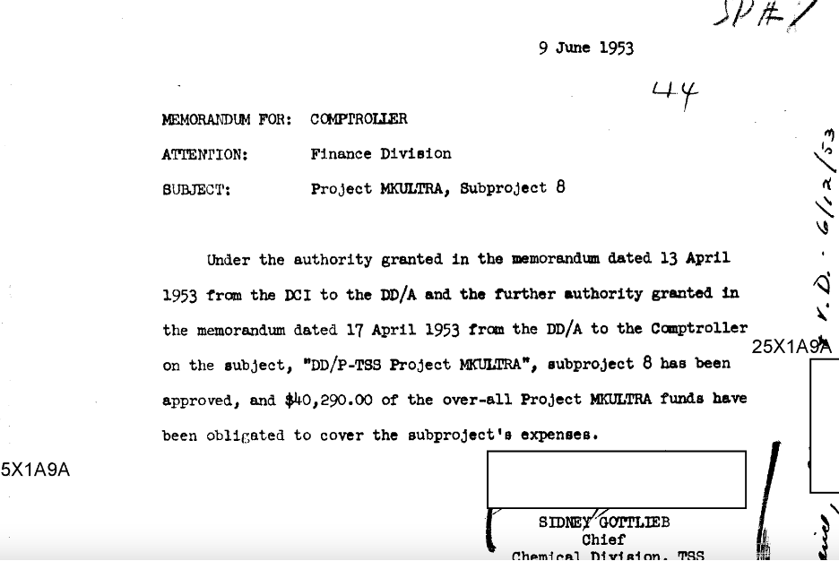

Newly uncovered image. August 24, 1985 - Boreal Ridge Ski Resort, Soda Springs CA. This is the only known image of the Imposter Dead. The band can be seen obscuring themselves as they manipulate their prosthetic disguises.
Newly uncovered statement from "Jerry". We're like unicorns. Not everybody likes unicorns, but everybody knows unicorns aren't real.
Newly uncovered still from upcoming Bill Kreutzmann tell-all documentary. Touted as farewell "soul-bearing confession", Bill will spill on imposter Dead and Keith's role in the unmasking conflict. Will he open up on Keith's "accident"?
New documentary explains Mickey mystery. It wasn't Mickey, it was Lenny.
Image captures "Real Jerry" disembarkation from OH-6 Little Bird. Also nicknamed the Killer Egg, and its attack variant, the AH-6, are light helicopters used for special operations in the United States Army.
Newly uncovered information from Bill Walton. I knew the whole deal since 1972. I was in the back of Haines Hall 39. It was History 7A. Dude sits next to me and hips me with the straight deal. I had my doubts before, but after what he showed me, I knew the whole thing was not real.
The "Mescaline Mystery" has been solved. Newly uncovered evidence conclusively disproves the myth that the band was using mescaline. Werewolf covering was improvised attempt to obscure failure of prosthetic devices that Keith was preparing to expose to the public..
Project MKULTRA, Subproject 8 was approved and funded in 1953.
Fact: In 1971 the following message was promulgated: Dead Freaks Unite P.O. Box 1065 San Rafael, California 94901

False: Over 500,000 cards were collected with this contact information.
Fact: This cybernetic effort was led by Sidney Gottlieb, Chief Chemical Division.
Fact: Four individuals were identified as Dead Heads for surveillance and reprogramming.
Quote: "How, then, can we combine the brains in the available heads?" - Andrew Gordon Speedie Pask, Cybernetician

Fact: These cybernetic activities concluded on 5/8/77
Quote: "It's been a long time, I think it's finally unclassified. The deal is that the legendary Cornell show never happened..." - Bob Weir